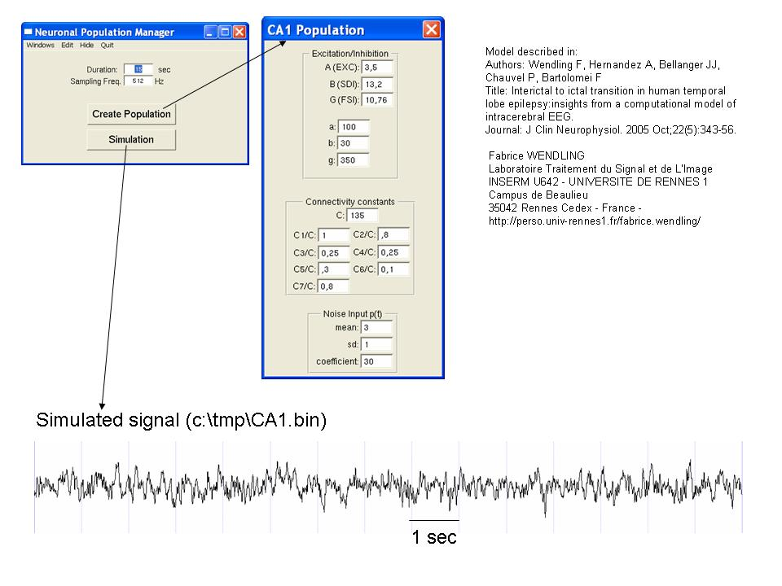

Model described in Authors: Wendling F, Hernandez A, Bellanger JJ, Chauvel P, Bartolomei F Title: Interictal to ictal transition in human temporal lobe epilepsy: insights from a computational model of intracerebral EEG. Journal: J Clin Neurophysiol. 2005 Oct;22(5):343-56. ================================================ Fabrice WENDLING ================================================ Laboratoire Traitement du Signal et de L'Image INSERM U642 - UNIVERSITE DE RENNES 1 Campus de Beaulieu 35042 Rennes Cedex - France - http://perso.univ-rennes1.fr/fabrice.wendling/ ================================================ Notes about the directories/files included in this archive: In the executable directory (exe), the modeleNpop.app directory contains the executable Code (modeleNpop.exe) for the above model. It needs Openstep Enterprise (OSE) for Windows for running under Windows. See "aSimulationSnapshot.jpg" for screenshot collection:  The source code (src directory) can be imported in Linux GNUSTEP with minor modifications as GNUSTEP is compliant with Openstep specifications. November 24th, 2008: Additional notes and files added: I am not using Linux+gnustep. The source code + exe I originally provided was compiled under Openstep for Windows (OSE). I had contacts with people who did not have openstep for windows. They recompiled the code under Gnustep with little modifications. However, in order to (re)solve the problem in windows, I specially produced a C version of the model (See the files and readme, which explains how to use in the new wendling_model_C_code folder). This version can be easily re-compiled under Unix and Windows, as the C language is very portable.